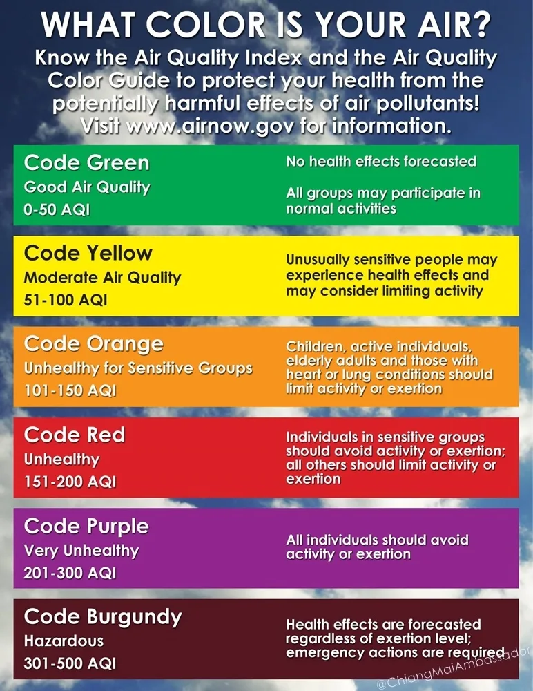

Smoky Season in Chiang Mai
I AM SORRY, BUT NOTHING IS GOING TO CHANGE.
I have nearly 7 smoky seasons under my belt and last year posted this in Facebook …
Can we pin a post about the smoke? So that people read about the smoke rather than making another post about the smoke? I think the smoke sucks, but I live here in the smoke and I deal with the smoke. I just don’t want to talk about the smoke every day and hear about people in the smoke whinging about the smoke and the people out of the smoke whinging about people whinging about the smoke and posting pictures with no smoke. You are not going to affect the smoke one single bit, so live with the smoke, do what you have to do to survive the smoke or leave the smoke (and do it quietly). And I know there is no smoke at the beach, I just don’t want to see no smoke. Unfortunately I can’t pay for a pinned post about the smoke.
https://www.facebook.com/groups/cmnomads/permalink/1558078751111867/
I got some quality traction! Plenty of hot smokin’ comments too.
Dealing with the smoke
Don’t whinge about, we all know about it, we all see it and we all deal with it. If you can’t deal with it … LEAVE.
Spending time in other parts of the world will help you survive smokey season in Chiang Mai! Go anywhere! Just Go.
Pretty much get a good mask for outside.
Limit your exposure. Watch out when exercising.
Spend time indoors.
The Details, the Readings
(based on PM2.5 data from the Royal Thai Government Pollution Control Department,http://aqmthai.com/public_report.php?lang=en, reporting station 36t, and the AQI calculator at http://airnow.gov/index.cfm?action=resources.conc_aqi_calc).
The World Health Organization and U.S. Environmental Protection Agency encourage use of PM2.5 AQI values (rather than PM10 AQI values), to more accurately judge potential health effects from pollution. For more information about PM2.5 health effects and what you can do to protect yourself and your family.
